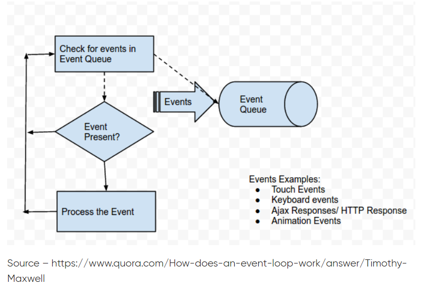

Questions
A session Storage object for the current origin can be accessed using the read-only sessionStorage attribute. Similar to local storage, session storage has the advantage that its contents are deleted when the page session ends, unlike local storage, which keeps its contents forever.
- Whenever a document is loaded in a particular tab in the browser, a unique page session gets created and assigned to that particular tab. That page session is valid only for that particular tab.
- A page session lasts as long as the tab or the browser is open, and survives over page reloads and restores.
- Opening a page in a new tab or window creates a new session with the value of the top-level browsing context, which differs from how session cookies work.
- Opening multiple tabs/windows with the same URL creates sessionStorage for each tab/window.
- Duplicating a tab copies the tab's sessionStorage into the new tab.
- Closing a tab/window ends the session and clears objects in sessionStorage.
Global Scope
The Javascript global scope is the context where everything in a Javascript program executes by default. This scope includes all variables, objects, and references that are not contained within a customized scope defined by a programmer. Global scope is the entire Javascript execution environment. Any variables assigned without an explicit scope (using the var, let, or const keywords) automatically become global variables. The same is true for functions. In the global scope, any variable can overwrite any other variable at any time. This is why creating global variables and global functions in Javascript is potentially dangerous. The Javascript interpreter does not check to make sure that a variable or function name exists, so you might accidentally overwrite an important built-in Javascript function or property. The Javascript global scope is critical to run programs properly, but developers should never create global variables or global functions in production code, especially in large projects. It is not dangerous to create global functions and variables in small, isolated test cases. Anytime someone else will use your code, using the global scope is a risky choice.
Block Scope
A block scope is the area within if, switch conditions or for and while loops. Generally speaking, whenever you see {curly brackets}, it is a block. In ES6, const and let keywords allow developers to declare variables in the block scope, which means those variables exist only within the corresponding block.
The event loop is a process that waits for the Call Stack to be clear before pushing callbacks from the Task Queue to the Call Stack. Once the Stack is clear, the event loop triggers and checks the Task Queue for available callbacks. If there are any, it pushes it to the Call Stack, waits for the Call Stack to be clear again, and repeats the same process.

The above diagram demonstrates the basic workflow between the Event Loop and the Task Queue.
tabindex="0" attribute is necessary to make the div focusable